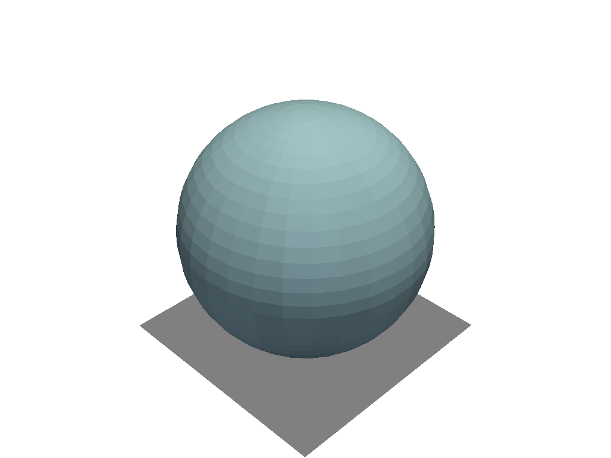

add_floor#
- Renderer.add_floor(face='-z', i_resolution=10, j_resolution=10, color=None, line_width=None, opacity=1.0, show_edges=False, lighting=False, edge_color=None, reset_camera=None, pad=0.0, offset=0.0, pickable=False, store_floor_kwargs=True)[ソース]#
床メッシュを表示します．
これにより，シーンの境界に平面が生成され，床または壁のように動作します．
- パラメータ
- face
str,optional 平面を配置する面．オプションは (
'-z','-y','-x','+z','+y', and'+z') で，-/+sign は平面が軸のどちら側に位置するかを示します．たとえば，'-z'はXY面とシーンの下部(最小z)にフロアを生成します．- i_resolution
int,optional 平面上のi方向の点の数です．
- j_resolution
int,optional 平面上のj方向の点の数．
- color
color_like,optional すべてのラベルと軸ラベルの色です．デフォルトはグレーです．文字列，RGBリスト，または16進カラー文字列．
- line_width
int,optional エッジの厚み．
show_edgesがTrueの場合のみ．- opacity
float,optional 生成されたサーフェスの不透明度．
- show_edgesbool,
optional 並べて表示するメッシュエッジを表示するかどうかを示すフラグ．
- line_width
float,optional 線の太さ．ワイヤフレーム表示とサーフェス表示にのみ有効です．デフォルトは
Noneです．- lightingbool,
optional ビュー方向の照明を有効または無効にします．デフォルトは
Falseです．- edge_color
color_like,optional メッシュのエッジのカラー．
- reset_camerabool,
optional 床を追加した後，カメラを
Trueにリセットします．- pad
float,optional 0と1の間のパディングパーセンテージ．
- offset
float,optional 平面法線に沿ったパーセンテージオフセット．
- pickablebool,
optional このフロアアクターをレンダラーで選択できるようにします．
- store_floor_kwargsbool,
optional このフロアの追加時に使用されたキーワード引数を格納します．境界を更新してフロアを再生成するときに便利です．
- face
- 戻り値
vtk.vtkActor床のVTKアクター．
例
球の下にフロアを追加してプロットします．
>>> import pyvista >>> pl = pyvista.Plotter() >>> actor = pl.add_mesh(pyvista.Sphere()) >>> actor = pl.add_floor() >>> pl.show()
